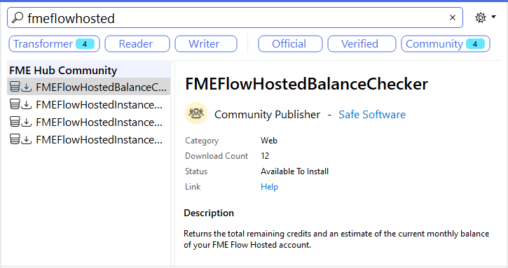

After completing this lesson, you’ll be able to:
FME Flow adds an extra dimension to FME performance: scalability. In terms of performance, the item most easily scalable is the number of FME engines.
Increasing the number of engines supports a higher volume of jobs, and the FME Flow Core contains a Software Load Balancer (SLB) to distribute jobs to the FME engines in a balanced way.
By default, utilizing multiple engines is only possible when you have multiple workspaces to run. When you have only a single workspace and wish to process it more efficiently on FME Flow, you must divide it into multiple jobs.
To do so, I can create a parent workspace that divides my source data into separate parts and sends each to a different worker job using the FMEFlowJobSubmitter transformer.
For example, I can calculate the bounds of tiles to be created and share the load over multiple engines by running the workspace separately for each tile.
FME Flow supports a usage-based model for engine pricing. CPU-usage engines let you spin up multiple engines in response to bursty workflows, paying for CPU time rather than per engine. In cases where a lot of data needs to be processed at once but not frequently, CPU-usage engines can be performant from both a workflow and cost perspective. You can learn more by reading the documentation.
FME Flow Hosted is a hosted deployment option for FME Flow. The benefit is that you don’t have to purchase FME Flow; you can use it whenever you have a job that can take advantage of its power. You can create an instance with as many engines as you want, considering that the hardware you select will impact performance.
You can gain performance improvements by automating engines with the FME Flow Hosted custom transformers available on the FME Hub:

With the FMEFlowHostedInstanceLauncher transformer (or the FMEFlowHostedInstanceController), I can run my parent workspace, have it automatically start an FME Flow Hosted instance, and run one or more worker jobs on it.
This way, I can start a new instance for each job or run several jobs on one instance, depending on the instance type and how many engines it has.
For more FME Flow Hosted performance tips, see these Knowledge Base articles: FME Flow Administration: Job Scalability and Management and How to Control FME Flow Engine Memory Usage.